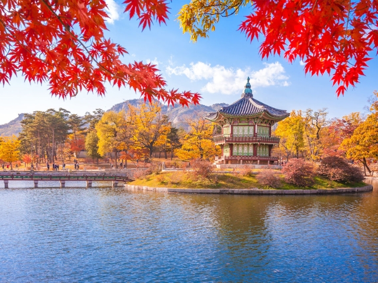

Dobrodošli na stranicu o Južnoj Koreji
Južna Koreja je zemlja bogate povijesti, dinamične ekonomije i prekrasnih prirodnih znamenitosti. Otkrijte više o ovoj fascinantnoj zemlji kroz naše stranice.
Južna Koreja je država u Istočnoj Aziji. Zauzima južni dio Korejskog poluotoka, a nastala je u doba hladnog rata kada je poluotok podijeljen na komunistički sjever i kapitalistički jug. Ima kopnenu granicu samo sa Sjevernom Korejom. Izlazi na Japansko more na istoku, Istočno kinesko more na jugu i Žuto more na zapadu.

Stanovništvo
Prema popisu stanovništva iz 2015. Južna Koreja imala je 51 069 375 st. (od čega 1 363 712 stranih državljana), tj. dva puta više u usporedbi s razdobljem pedesetak godina prije (25,0 milijuna stanovnika, 1960). S prosječnom gustoćom od 509 st./km² (2015) ubraja se u najgušće naseljene države svijeta. Gotovo polovica (49,5%) ukupnoga stanovništva živi na sjeverozapadu zemlje, odn. na širem području gradova Seoula i Incheona i u pokrajini Gyeonggi (ukupno samo 11% teritorija). Stanovništvo je etnički homogeno; Korejci čine čak 99,9% stanovništva. Procjenjuje se da izvan domovine živi oko sedam milijuna Korejaca (2015), uglavnom u Kini, SAD-u, Japanu i Kanadi.